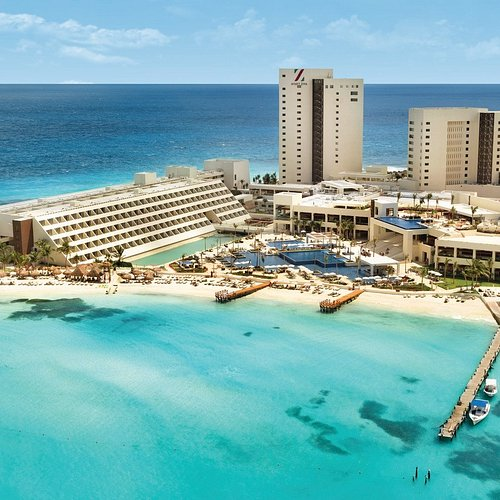

Taniti boasts a remarkably diverse hospitality sector that caters to every type of traveler, regardless of their budget or travel style. At one end of the spectrum, the island offers budget-friendly options designed for backpackers and students, such as inexpensive hostels that provide a communal and economical stay. Moving up the chain of luxury, the destination is anchored by a prominent, large four-star resort that offers premium amenities and high-end service. This distinct range ensures that whether a visitor is looking for a simple place to sleep or a full-service vacation experience, they will find a suitable match within the island's hospitality market.
BOOK NOW >
To maintain the high quality of these varied services, the Tanitian government maintains a rigorous oversight program regarding all accommodation facilities. Every type of lodging, from the budget hostel to the family-run inn, is strictly regulated to ensure compliance with national safety and hygiene standards. This is not merely a formality; all establishments are subject to regular, unannounced inspections conducted by government officials. These checks serve to protect tourists by verifying that the facilities are safe, clean, and well-maintained, ultimately reinforcing the island's reputation as a secure and reliable destination for global travelers.